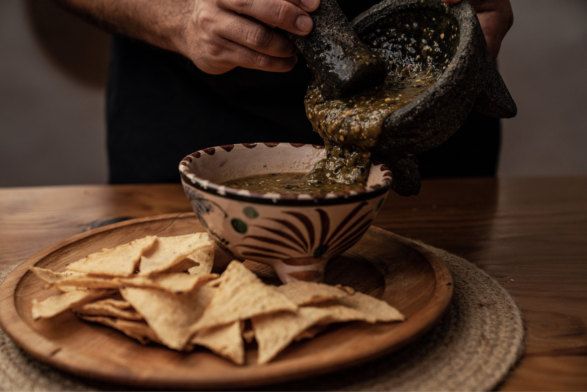
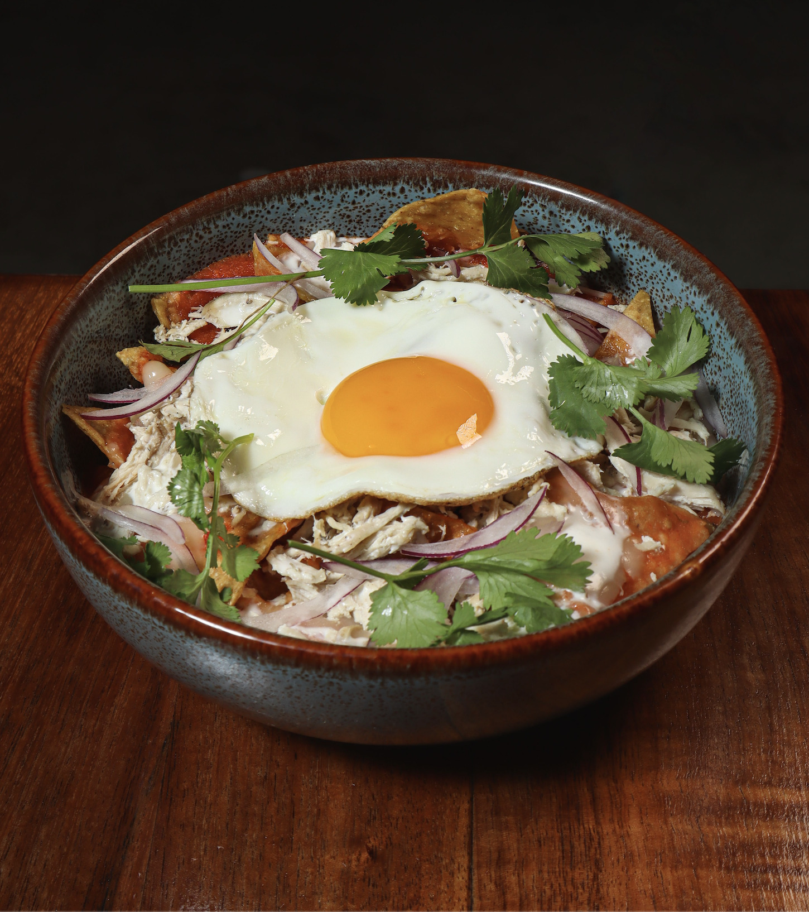
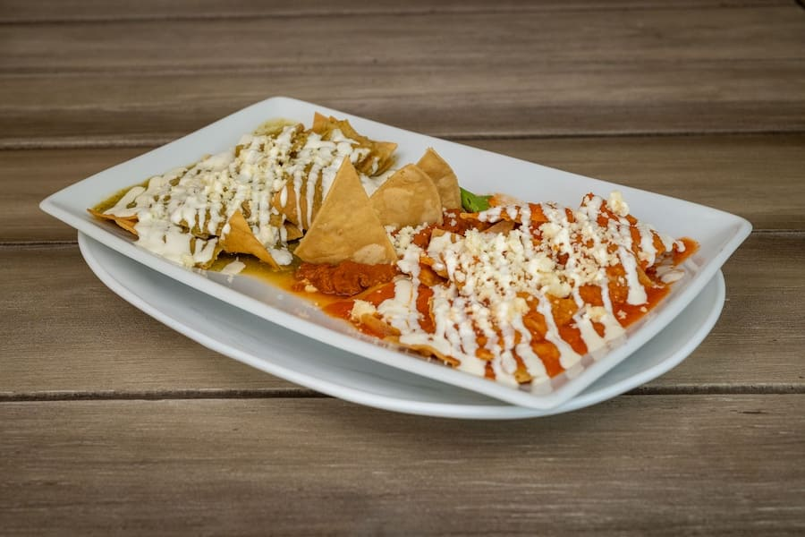

Chilaquiles
Crujientes tortillas de maíz bañadas en salsa, acompañadas de queso, crema y otros ingredientes. Un clásico de los desayunos mexicanos.

Historia y origen
Los chilaquiles son uno de los desayunos más representativos de la gastronomía mexicana. Su origen se relaciona con la tradición de aprovechar las tortillas de maíz, uno de los ingredientes fundamentales de la cocina del país.
El platillo consiste en tortillas cortadas en triángulos, generalmente fritas o tostadas, que se mezclan con salsa roja o verde. Se acompañan habitualmente de crema, queso, cebolla y, en ocasiones, huevo o pollo.
Aunque existen numerosas variantes regionales y familiares, los chilaquiles mantienen su lugar como un desayuno tradicional que combina ingredientes sencillos con mucho sabor.
Receta de chilaquiles verdes
Una receta casera de chilaquiles verdes, acompañados de crema, queso fresco y cebolla.
Ingredientes
- 12 tortillas de maíz
- 500 g de tomates verdes (tomatillos)
- 2 chiles serranos
- 1/4 de cebolla blanca
- 1 diente de ajo
- 1/2 taza de cilantro fresco
- 1/2 taza de caldo de pollo o agua
- Aceite vegetal
- Sal al gusto
- Crema mexicana
- Queso fresco desmoronado
- Cebolla en rodajas finas
- Huevos o pollo deshebrado (opcional)
Preparación paso a paso
- Preparar las tortillas: Corta las tortillas en triángulos y fríelas en aceite caliente hasta que estén doradas. Retíralas y colócalas sobre papel absorbente.
- Cocinar los ingredientes de la salsa: Hierve los tomates verdes y los chiles serranos durante unos 8 minutos, hasta que estén suaves.
- Licuar la salsa: Licúa los tomates y los chiles con la cebolla, el ajo, el cilantro y un poco de caldo o agua.
- Cocinar la salsa: Calienta un poco de aceite en una sartén, incorpora la salsa y cocina durante 5 a 8 minutos. Agrega sal al gusto.
- Incorporar las tortillas: Añade los totopos a la salsa y mezcla suavemente. Si prefieres que permanezcan crujientes, hazlo justo antes de servir.
- Servir: Sirve los chilaquiles con crema, queso fresco y cebolla. Puedes acompañarlos con huevo o pollo deshebrado.



Aprende a preparar chilaquiles verdes
¿Quieres ver cómo se preparan? Descubre el proceso paso a paso en este video.